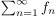

Sei eine Funktionenfolge, so dass gilt
Dann folgt , dass  gleichmäßig konvergiert
Sei beliebig, dann gilt, dass
eine konvergente Majorante ist. todo
Author: Anton Zakrewski
Email: anton.zakrewski@campus.lmu.de
 beliebig, dann gilt, dass
beliebig, dann gilt, dass
 eine
eine